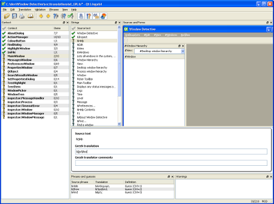

Introduction
Window Detective is built using the Qt framework, which has built-in support for multiple languages. The text strings in the user interface (UI) can be displayed in any language, provided there is a translation file present for that language.
When installing Window Detective, you will be asked to select a language. There are a number of languages to choose from and if your systems language is one of them it will be selected by default. If your language is not included in the installer, you may wish to translate the application yourself.
How to translate
-
Download the translation pack
In this zip file you will find a file containing all translatable strings in Window Detective as well as the Qt tool (Linguist) which will be used to translate the strings. Qt Linguist can be ran as a stand-alone application (i.e. it doesn't need to be installed), but it does require the DLLs that are included in the zip file.
Existing translation files are also included. As new versions of Window Detective are released, these files may need to be updated.
-
(Optional) Download the latest source code
This step is not necessary, but it will help when using Linguist. If you do not wish to download the source code, you may skip to the next step. The only disadvantage of not having the source code available is that Linguist will not be able to show you what the UI will look like with the translated strings. You will still be able to perform the translation.
If you do download the source code, extract the zip file to where you want to work, and look in the \src\translations directory. This directory contains any existing translation files (which are also included in the Translation Pack) as well as the compiled files (you can ignore them). You will need to put your translation file here for Linguist to be able to pick up the source location (the .ts file contains relative file paths).
-
Change the name of the template.ts file to <language>_<country>.ts.
<language> is a lowercase, two-letter, ISO 639 language code, and <country> is an uppercase, two-letter, ISO 3166 country code.
For example, the Polish translation file is pl_PL.ts. If you are not sure what codes to choose, just pick the language or country closest to yours. This naming scheme is not important, it only serves to provide a unique name for each translation.
-
Start linguist.exe and open the .ts file.
You will be prompted to select the source and target language. The source language is obviously English (the country doesn't really matter, but it is Australia). The target language and country are the same as those you used to name the .ts file.
Once that is done, you will see the Linguist main window:
The Qt Linguist main window (click for a larger image)
On the far left of the window, there is a list of all classes or UI forms that contain translatable text. When an item from that list is selected, the second list shows all strings in that class or form.
The right side shows either the source code or the UI form, depending on whether the string is in the source code or a form. Note: If you did not do Step 2, this area will be blank or will day that it cannot find the source code.
Below that is the area to enter the translated text, it's pretty straight- forward. You don't have to bother with the comments section unless you want to.
After you have entered the translation, press Ctrl+Enter to move on to the next unfinished one
-
Once you have translated all the strings, create a ticket and attach the .ts file. I will then compile the file and include it in the next release. You can give me your name to include in the credits, or i can put your email address or just an alias.
{kind=link}
Important Note: There are some words or phrases which should not be translated, either because they are special words that cannot change, or because there is no appropriate translation for them. The following words or phrases should be left alone:
- The application name, "Window Detective"
- Variable placeholders. Some strings contain a placeholder which, when displayed in the UI, will show the value of a variable. This placeholder is a percent character (%) followed by a number. e.g. %1, %2
- Ampersand (&) before a character. There are used for standard menu accessability, the character following & is used to select that menu item using the keyboard. The character will most likely be different in another language, so you may have to choose another.
- Punctuation such as full stops or exclamation marks. Linguist will warn you if punctuation is incorrect or you forget a % or &.
- Newline (\n) or tab (\t) characters.
- Ctrl key combinations, e.g. Ctrl+F
- Certain technical words like "window" or "handle". These words have a number of different meanings in English and most likely do too in any other language, but they have a specific meaning here. For instance, "window" refers to a graphical UI component - not a pane of glass; and "handle" refers to an integer used by the Operating System to itentify a window - not something used to open a door.
- Markup tags. For any strings containing HTML, only the "visible" text can be translated. That is, text that will be shown in the UI when the HTML is rendered. Any text enclosed in angle brackets (< and >) must not be translated. The same goes for HTML symbols such as "
If there are any words or phrases you are not sure of, just leave them as they are in English.